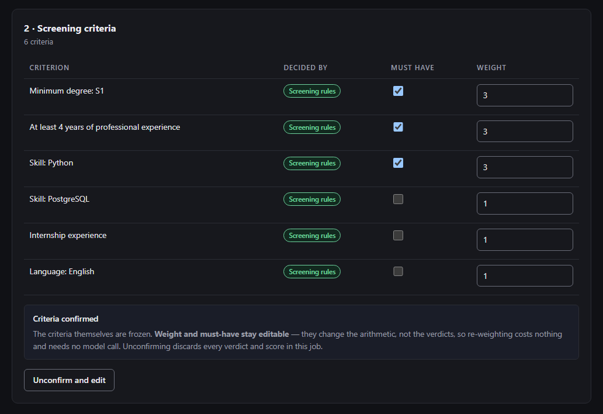
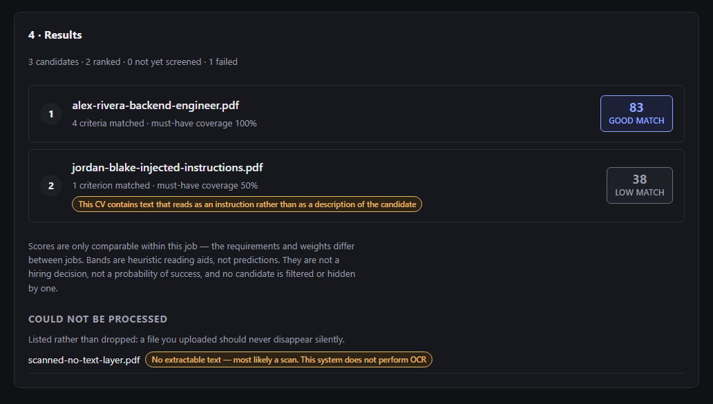
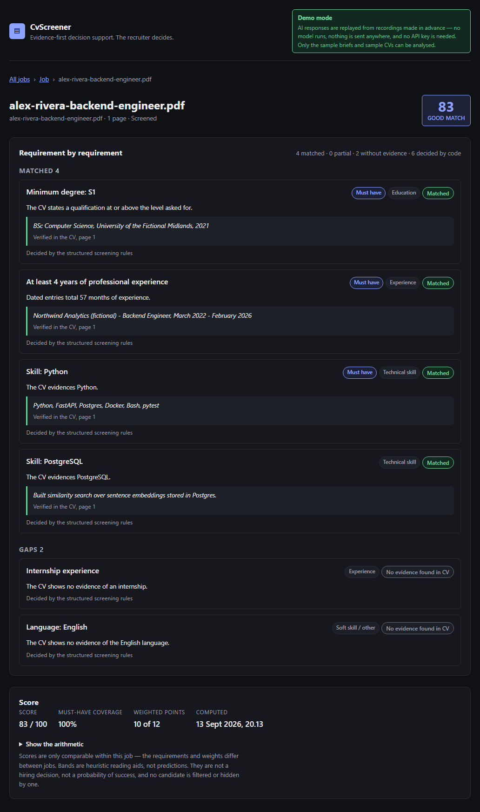

Portfolio project · Full-stack · AI-assisted
CvScreener
CV screening support that shows its working. A recruiter chooses criteria the system can genuinely check; deterministic code decides each one and quotes the line of the CV it rests on; a transparent score orders the shortlist; and a person makes the decision.
This page is a static showcase. The application itself runs locally — a React frontend, a FastAPI backend, PostgreSQL and a local language model — and it is not offered as a hosted service.
- 8 criterion types each decided by comparison and arithmetic over the CV's own text
- 0 of 94 verdicts over-credited on the structured evaluation set (12 synthetic CVs)
- 52 of 52 cited quotes found verbatim in the CV on that set
- 1,406 tests 1,271 backend and 135 frontend, passing locally
This page and the application are different things
Anyone can open this page. Nobody can upload a CV to it, because there is nothing behind it to receive one.
This showcase
- Plain HTML and CSS served from a static host.
- No backend, no database, no language model, no upload form.
- No cookies, no tracking, and nothing loaded from any other site.
- The screenshots below were captured from the local application.
The full application
-
React + TypeScript frontend, FastAPI backend, PostgreSQL in Docker, and
qwen2.5:7b-instructthrough Ollama — all on your own machine. -
On Windows it starts with one double-click on
Start CvScreener.cmd. - In its local AI mode no CV is sent to a third-party AI service, and no account or API key is needed.
- How to run it
The problem
A recruiter with two hundred CVs and one role gives each a few seconds, looking for four or five things. It is repetitive, it drifts between the first CV and the last, and the reasoning disappears the moment the file is closed.
The obvious shortcut — paste a CV and a job description into a chatbot and ask for a score — is worse. The number can change between runs, nobody can say why a candidate ranked where they did, and a sentence hidden in the CV telling the model to mark the candidate as fully qualified can work.
CvScreener takes the other approach: every judgement that has to be defensible is made by ordinary code over the document's own text, and every positive finding must point at the passage that supports it.
How CvScreener works
The main path for structured criteria, from a recruiter's choices to a ranked shortlist.
- Person a human action
- Deterministic code no model involved
-
Choose and confirm criteria Person
Criteria come from eight supported types, each with weights and must-have flags. Nothing is screened until a person confirms the set; the server refuses to match against an unconfirmed one.
-
Extract the text Deterministic code
PDF text is read with page offsets. A scan with no text layer fails as
NO_TEXT_LAYERinstead of being scored as an empty CV, and a two-column page is flagged because its reading order cannot be trusted. -
Read the facts, with their spans Deterministic code
Dated roles, qualifications, grades, skills, languages and certifications — each with the exact passage it came from.
-
Decide each criterion Deterministic code
Comparison and arithmetic: a degree against a level, dated entries against a number of months, a grade on the scale the recruiter stated, a claimed skill against a mere mention.
-
Verify every quote Deterministic code
A positive verdict needs a quote found in the application's own copy of the document. A quote that is not there — or that reads as an instruction — cannot support one.
-
Score and rank Deterministic code
A weighted average over stored verdicts, then a deterministic total order. No candidate is filtered out.
-
Review the evidence and decide Person
The recruiter sees every verdict beside its quote and can disagree with any of it. The system never accepts, rejects or hides a candidate.
A language model is still part of the application
The steps above describe the structured path. The next section shows exactly where a model is used today, including one call that is not yet removed.
Where the language model is — and isn't
CvScreener is AI-assisted, not AI-decided. The boundary is enforced in code, and it is stated here as it stands today rather than as it is intended to become.
| Part of the flow | Performed by | Notes |
|---|---|---|
| Choosing and confirming criteria | Person | The confirmation gate is enforced server-side. |
| Text extraction and fact reading | Deterministic code | pypdf, then the fact reader, with spans. |
| Structured matching | Deterministic code |
Calls no model. Verdicts are recorded with the method
DETERMINISTIC_STRUCTURED.
|
| Evidence verification, scoring, ranking | Deterministic code | Pure functions over stored rows; no model, clock or randomness in the path. |
| Profile extraction | Language model | Current behaviour Pressing Screen requests a structured profile for each new CV before matching, even when every criterion is structured — although structured matching never reads that profile. Removing the call is recorded as open follow-up work. |
| Free-text criteria (optional) | Language model | A criterion the eight types cannot express is still accepted. The model proposes requirements and judges those pairs; its quotes must still verify, and the interface says what the path costs. |
| The hiring decision | Person | Always. |
What the model never does
- It never produces a score, a rank, a recommendation or a hiring decision. No schema it fills in has a field for one.
- Its output is re-validated against a schema, and a quote it offers is checked against the document before it can count.
-
The provider SDK is imported in exactly one package (
app/llm/); a test parses every module's imports to keep it that way.
Which model, and where it runs
-
Local AI mode (the default when demo mode is off):
qwen2.5:7b-instructthrough Ollama on the same machine. -
Cloud AI mode:
deepseek-flashthrough DeepSeek's API, selected withLLM_PROVIDER=deepseek. Each screened CV is then sent to DeepSeek, and every call costs money. It is implemented and verified locally, with offline tests of its requests, replies and failure paths, but it has not yet been run against the real API, so no claim is made about its answers. - Demo mode: model answers are replayed from recordings, and the structured demo calls no model at all.
- Anthropic Claude is implemented as an opt-in provider, but has never been exercised against a real key in this repository, so no claim is made about it.
Why matching became deterministic
An earlier version let a recruiter type criteria in their own words and had a language model turn them into requirements. It was replaced on measured evidence, recorded in ADR-0012.
| Measure | Deterministic engine | Qwen2.5-7B |
|---|---|---|
| Verdict agreement with the labels | 88.8% | 82.0% |
| Over-credited verdicts | 0 | 2 |
| Evidence validity | 100% | 88% |
| Reproducibility | 100% | not bit-stable |
| Time per CV | 5.5 ms | ~14,900 ms |
| Model download | 0 bytes | 4.7 GB |
And where deterministic code lost
Turning free text into requirements went the other way. Given one formal job
description, the deterministic intake produced 26 "requirements" against the model's
12 — including About the role
— and it could not scope must-have and
nice-to-have markers across a compound sentence. The weakness was never the judging;
it was the intake. So the intake changed: criteria are now chosen from a published
list of types, and the judging stayed in code.
The eight criterion types
| Criterion | What the recruiter sets | How the CV is read |
|---|---|---|
| Minimum degree | A level: D3/Diploma, S1/Bachelor, S2/Master, S3/Doctorate | The highest qualification the CV states, compared by rank |
| Minimum GPA | A grade and the scale it is out of | A grade the document labels as one; a different scale is not converted |
| Work experience | A duration in months | Dated entries, with overlapping roles counted once |
| Skill | One name from a published list of 85 | The line that claims it, distinguishing applied work from exposure |
| Internship | Presence, optionally a duration | Dated entries whose title says internship |
| Language | One of ten languages | Presence only — never a proficiency level |
| Experience in a field | A skill and a duration | The same date arithmetic, counting only roles whose own entry evidences the skill |
| Certification | One credential from a list of 24 | The line that claims it; presence only, no equivalences |
Deliberately not offered: university tier, which is a socioeconomic proxy, and language proficiency levels, which a CV states too unreliably to read without inventing them.
Evidence and explainability
If a CV does not mention a skill, CvScreener reports No evidence found in CV
—
never the candidate does not have this skill
. A CV is short and selective;
absence in the document is not absence in the person.
| Verdict | Meaning |
|---|---|
MATCHED |
The CV states it, and a verified quote is attached. |
PARTIAL |
Nearly there — dated experience short of the minimum but within the partial band, or a skill mentioned as exposure rather than applied work. |
NO_EVIDENCE |
“No evidence found in CV” — a statement about the document. |
NEEDS_REVIEW |
“Needs review” — the CV says something the engine cannot read safely, such as a GPA with no scale. Left out of the score entirely rather than counted as a zero. |
Anatomy of one verdict
From the demo candidate shown in the screenshots below.
- Criterion
- Skill: Python — must have, weight 3
- Verdict
MATCHED- Decided by
- The structured screening rules (
DETERMINISTIC_STRUCTURED) - Reason
- The CV evidences Python.
- Evidence
- Python, FastAPI, Postgres, Docker, Bash, pytest Verified in the CV, page 1
Two rules about quotes
A quote that cannot be found is not evidence. The verdict is
downgraded to NO_EVIDENCE and flagged, with the original claim kept for
the audit trail. An invented quote cannot help a candidate.
A quote that can be found is not automatically evidence either. Text in a CV addressed to the system is flagged and kept, never removed — and it cannot support any verdict, because it evidences no qualification.
Scoring and ranking
A weighted average over stored verdicts, computed by a pure function. Every input is stored, so the arithmetic can be checked line by line — and re-weighting a job never invalidates a verdict.
MATCHED = 1.0 PARTIAL = 0.5 NO_EVIDENCE = 0.0
NEEDS_REVIEW = excluded from both sides
score_raw = Σ (weight × value) / Σ (weight)
score = round(score_raw × 100) # half up, 0–100Worked example from the demo job. Six criteria weighted 3, 3, 3, 1, 1, 1 — a total of 12.
- Strong match: four criteria matched, worth 3 + 3 + 3 + 1 = 10 → 10 ÷ 12 = 83.3 → 83, Good Match.
- CV with injected instructions: Python matched (3) and experience partial (3 × 0.5) → 4.5 ÷ 12 = 37.5 → 38, Low Match.
Rules that matter more than the formula
- Bands are heuristics, not predictions. 90–100 Strong Match, 75–89 Good Match, 60–74 Review, below 60 Low Match — conventions with no empirical backing.
- An undefined score is not zero. Nothing asked, or nothing decidable, produces no number rather than a misleading 0.
- The must-have guard caps a label, never a candidate. An unevidenced must-have caps the displayed band at Review; the score stays visible.
- Ranking is a total order: score, then must-have coverage, then matched count, then arrival. Nothing is filtered, and scores are comparable only within one job.
Fairness and safety — and their limits
What is enforced
- Photo, gender, age, nationality, ethnicity, religion, marital status and home address are not fields in the candidate profile, so scoring never receives them.
- A criterion naming a protected characteristic is flagged and cannot be confirmed, and no structured type exists for any of them.
- CV text is treated as untrusted data, never as instructions. Instruction-like passages are flagged and cannot serve as evidence.
- Uploads are checked by magic bytes and capped in size, pages and batch count.
What is not claimed
- It is not unbiased. Proxy signals survive — name, university, employer, career gaps.
- No bias audit or disparate-impact analysis has been performed.
- No claim of prompt-injection immunity is made.
- It is a portfolio demonstration and must not be used for real hiring decisions.
Architecture
A modular monolith: one FastAPI application with hard internal boundaries. Nothing here has the independent scaling or deployment pressure that would justify microservices.
Everything below runs on one local machine
app/llm/
Ollama with qwen2.5:7b-instruct on this machine by default; DeepSeek
(deepseek-flash) or Anthropic through their cloud APIs when selected; recorded
responses in demo mode.
app/llm/ boundary.
Technology stack
| Layer | Choice | Why |
|---|---|---|
| Frontend | React 19, TypeScript, Vite | No runtime dependency beyond React: resource hooks and a small hash router are written in the project. |
| Backend | Python 3.10+, FastAPI, Pydantic, SQLAlchemy 2.0, Alembic | Pydantic models map directly onto the structured-output discipline the pipeline depends on. |
| Database | PostgreSQL 16 (Docker Compose) | Relational data with a real audit trail; pgvector evaluated and deferred. |
| Documents | pypdf | Text-layer extraction with page offsets, so evidence cites a location. |
| Language model | Ollama + qwen2.5:7b-instruct (local, default); DeepSeek + deepseek-flash (cloud API, opt-in); Anthropic (cloud API, opt-in) | A local default means no account, no key, and no CV leaving the machine. The cloud APIs need no local model, but send each CV to their provider and cost money per call. |
| Quality | pytest, Vitest, ruff, ESLint, Prettier, GitHub Actions | Lint, formatting, tests, migrations and documentation links checked in CI. |
Decisions recorded in writing
Twelve architecture decision records explain the choices above, including the AI and deterministic responsibility boundary, evidence-first evaluation, deterministic scoring and structured screening criteria. The full list is in the decision log.
Testing and verification
Automated tests
- 1,271 backend tests pass; one opt-in test that needs a live Ollama is skipped.
- 135 frontend tests pass.
- 97% backend line coverage.
Measured locally on the current code.
Continuous integration
- Backend against a real PostgreSQL service: lint, format, migration round-trip, model/migration drift check, tests.
- Frontend: lint, format, tests, production build.
- Documentation links and UI colour contrast against WCAG AA.
Local launcher
- Cold start with Docker, Ollama and both servers stopped.
- A second launch starts nothing twice; a concurrent launch is refused.
- Stop ends only what the launcher started, and the database is preserved.
Verified on Windows, including a real double-click start.
Evaluation harness
Unit tests prove the code does what it was written to do. The evaluation harness asks a different question — how often the engine's verdict matches an independent reading of the CV — over hand-labelled synthetic documents.
| Metric | Result |
|---|---|
| Verdict agreement with the hand-written label | 97 / 101 |
| Over-crediting (the costlier direction) | 0 / 94 |
| Under-crediting | 2 / 94 |
| Cited quotes found verbatim in the CV | 52 / 52 |
| Positive verdicts carrying a quote | 45 / 45 |
| Cited quotes naming no protected characteristic | 52 / 52 |
| Identical on a second run | 101 / 101 |
The harness earned its place. The first eight CVs were clean, English and single-column, and the engine agreed with all 61 of their labels. Four CVs written in the shapes real Indonesian uploads take — a two-column layout, organisational sections, dates on their own line, a degree still being read, misspellings — found three defects on their first run, including one over-credited must-have. Each is fixed with a regression test. The four disagreements that remain are reported rather than tuned away.
Demo
Screenshots of the local application running its built-in demo in demo mode. Every name, employer and university in them is fictional.

{kind=link}

{kind=link}

{kind=link}

Planned A short demo video
A screen recording of the same walkthrough is planned. Until then, the demo is one click inside the local application: start it in demo mode and press Load demo job.
Run the full application locally
The complete system runs on your own machine. Nothing about it is exposed to the internet.
You need
- Git, Python 3.10 or newer, and Node.js 22 (22.13 or later), 24, or 26+
- Docker Desktop, for PostgreSQL
-
For local AI mode only: Ollama and the
qwen2.5:7b-instructmodel (about 4.7 GB). Demo mode needs no model.
What the launcher never does
- Reset the database or delete its Docker volume.
- Download a model or install packages without an explicit yes.
- Stop a process it did not start.
On Windows: one double-click
-
Clone the repository:
git clone https://github.com/justinchristroper-arch/ai-cv-screener.git -
Double-click Start CvScreener.cmd in the repository folder. On a
fresh clone it offers to install the dependencies and to create
.envfrom.env.example, whose defaults start the application in demo mode. -
It starts Docker Desktop and PostgreSQL, applies migrations, checks the AI provider,
starts the backend and the frontend, and opens
http://localhost:5173. - Press Load demo job to see the walkthrough from the screenshots above.
- When you are done, double-click Stop CvScreener.cmd. Your data is kept.
Local AI mode
Set DEMO_MODE=false in .env, install Ollama, and pull the
model with ollama pull qwen2.5:7b-instruct. The launcher checks both; if
the model is missing it shows that command and asks before downloading anything.
macOS, Linux, or step by step
The launcher is Windows-only. The underlying commands, their bash equivalents and a troubleshooting section are in the development guide.
Limitations and future work
Known limitations
- No authentication. It is built as a local tool.
- Scanned PDFs cannot be read; there is no OCR.
- It measures what a CV says, not what a candidate can do.
- Two-column layouts are detected and flagged, but not repaired.
- Misspelled skills are not matched, by design: fuzzy matching credits skills nobody claimed.
- The evaluation set is small and synthetic, and model quality is not measured.
- Scoring constants are conventions, not findings.
- It is not deployed as a hosted service.
Future work
- Open follow-up Remove the profile-extraction model call from screening when every criterion is structured, so that path is model-free end to end.
- Planned A short screen recording of the demo.